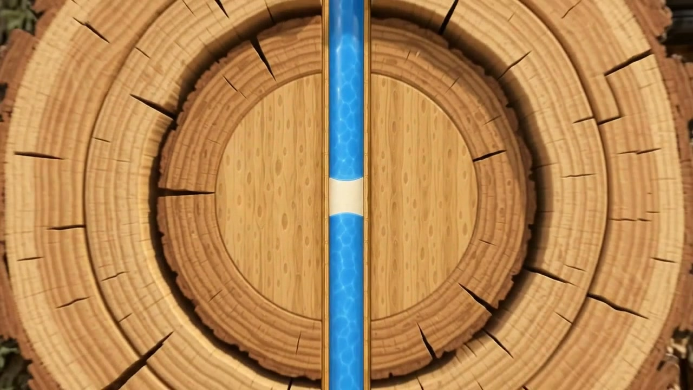
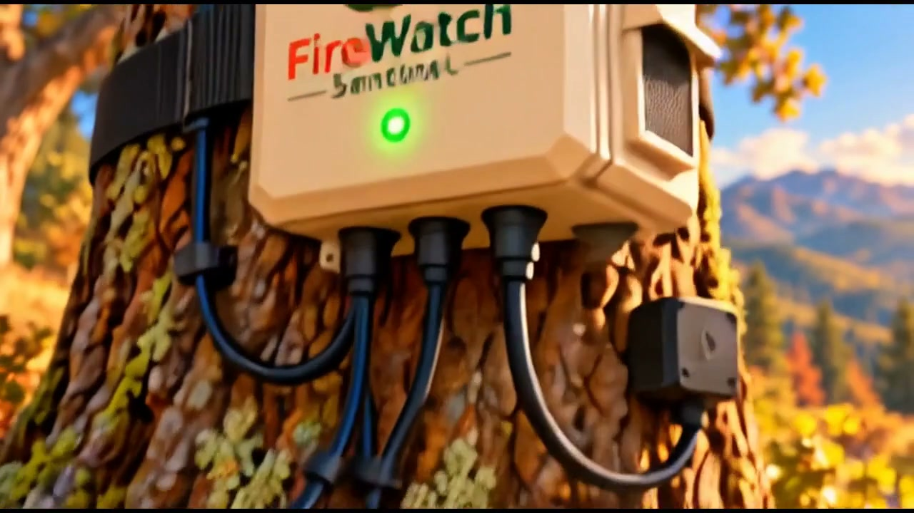
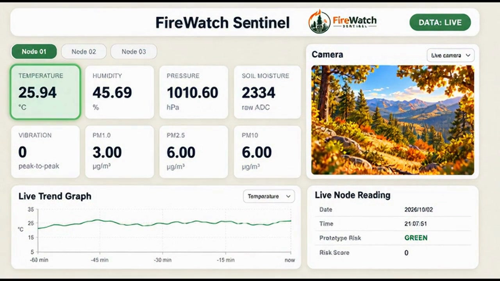

Prioritize field review.
Local observations could help agencies and fire-management teams identify areas for closer inspection, compare conditions, and inform prevention planning alongside existing monitoring resources.
Research & prototype development
Connecting vegetation stress, local environmental conditions, and visual context to explore a more informed approach to wildfire mitigation.
First place · $4,000 prize
BRDG Innovation Challenge · October 9, 2026
Project film
A narrated introduction to the sensing concept, the proposed network, and how information could support decisions. 4 minutes, 2 seconds · English captions available.
Open the film directlyFireWatch Sentinel is an early-stage research and prototype project. The film illustrates the concept; field performance and operational applications remain to be validated.
What the project studies
The research brings several observations into the same picture. The aim is to understand local changes over time and identify where further investigation may be useful.

01 · Vegetation
The project investigates small acoustic and vibration signals associated with changes in trees. These observations may provide another perspective on vegetation stress when considered alongside surrounding environmental conditions.
The research question is whether patterns over time can contribute useful information about vegetation condition before ignition. Establishing that relationship requires validation across different species, sites, and conditions.

02 · Surroundings
Temperature and humidity describe conditions in the surrounding air. Soil moisture adds a view of local water availability. Airborne particulate observations bring an additional dimension to the picture of conditions around a monitored location.
These readings would be reviewed together rather than treated as a single definitive indicator. Visual observations could help users interpret changes and decide whether an on-site check is appropriate.

03 · Shared understanding
The proposed dashboard would bring readings, trends, and visual context together across multiple locations. Comparing sites could help users examine local differences and focus follow-up work.
A record over time could also support research and planning. The value of that record would depend on data quality, reliable coverage, and evidence that the observations are meaningful in practice.
Potential applications
Potential users and customers span public agencies, landowners, infrastructure operators, and organizations responsible for community resilience. These are prospective applications for evaluation, rather than established customers or proven outcomes.
Local observations could help agencies and fire-management teams identify areas for closer inspection, compare conditions, and inform prevention planning alongside existing monitoring resources.
Forestry organizations, conservation groups, parks, and large property owners could use environmental trends to support vegetation management and assess changes across their land.
Operators of exposed assets could explore how site-level observations complement inspections, maintenance planning, and broader resilience programs.
Validated records could contribute to risk research and mitigation assessment. Suitability for insurance decisions would require evidence, appropriate governance, and careful review.
Municipalities and community organizations could benefit from a clearer shared view of environmental changes when discussing prevention priorities and long-term preparedness.
Research partners could study how vegetation signals and local conditions relate, evaluate data quality, and help establish where the approach offers practical value.
The intended role is to complement existing tools and professional judgment. The project does not yet establish fire prediction, emergency warning, or guaranteed loss-prevention capabilities.
The team & milestone
FireWatch Sentinel received first place and a $4,000 prize at the BRDG Innovation Challenge on .
Sami Beaini, Hector Castaneda, and Sneha Ramalia supported the team through the challenge with coaching and project guidance.

Research & collaboration
Connect with Sweitzer Ventures about research, potential pilot opportunities, or stakeholder needs.